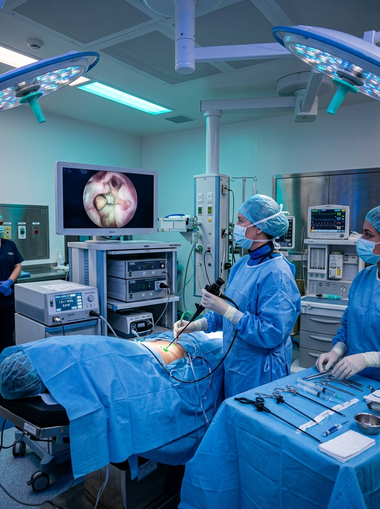
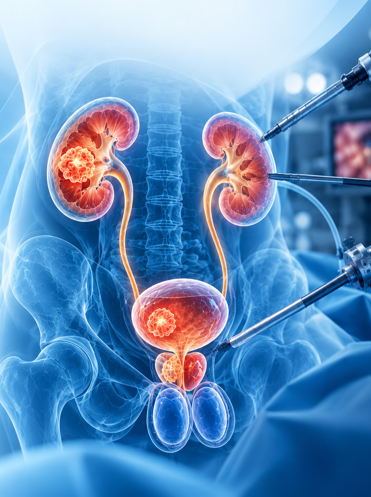
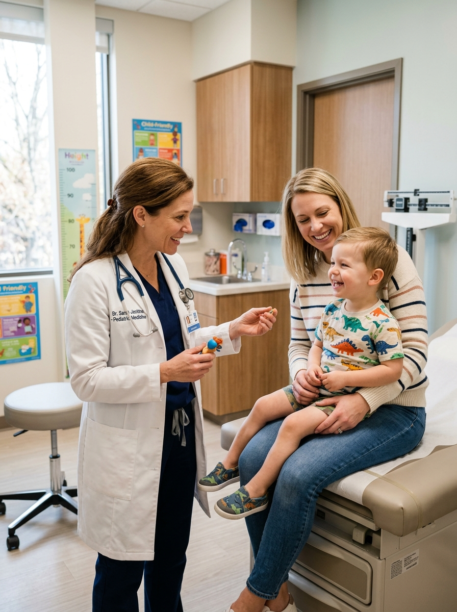
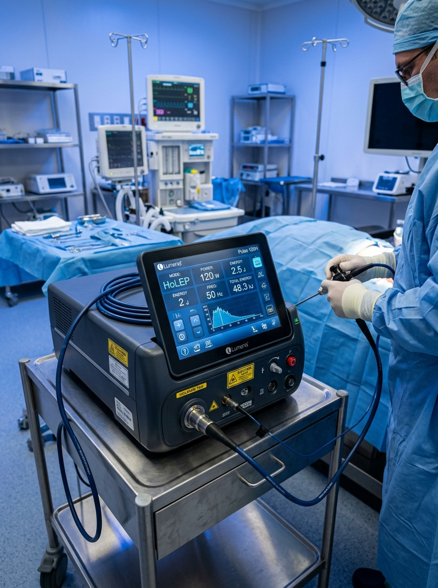
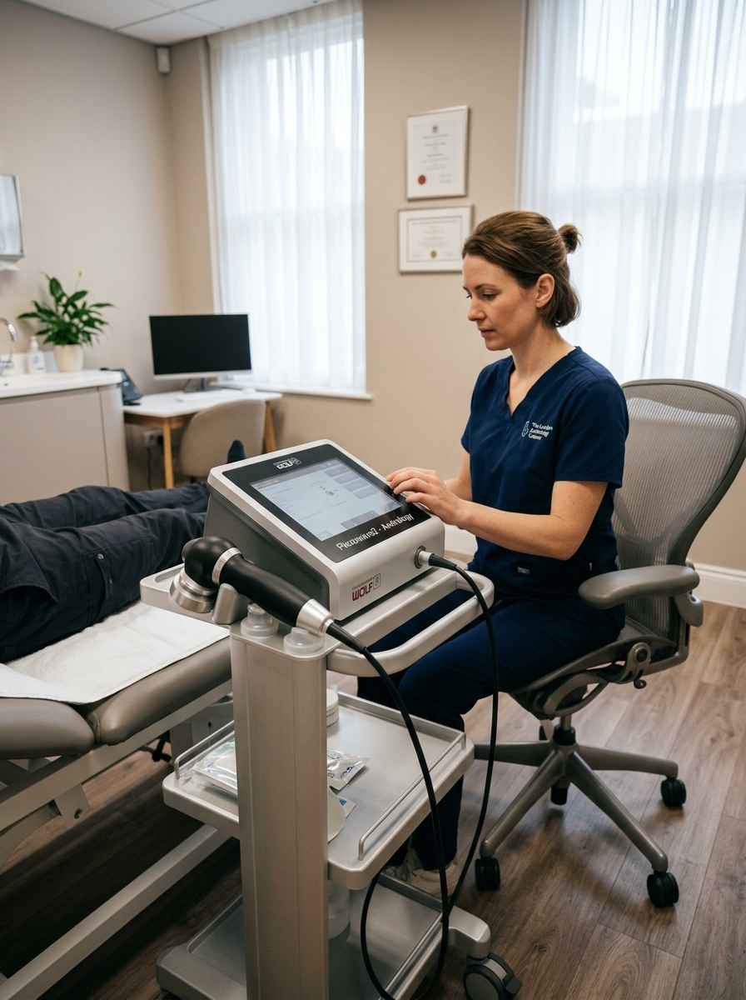
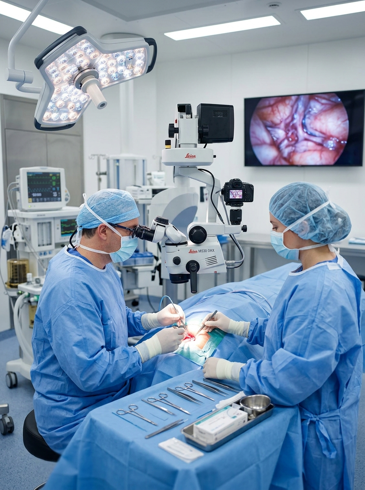
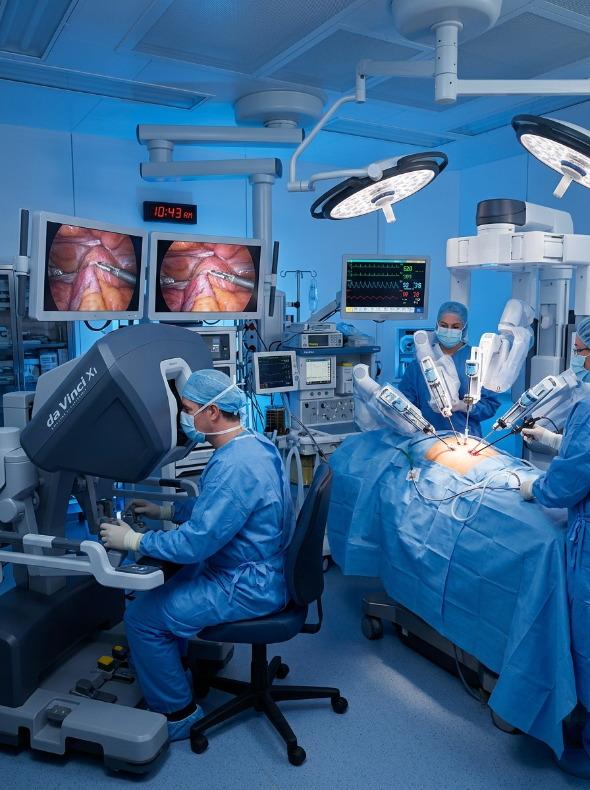

Randevu & Danışma
0322 455 25 50

Görev Yeri
Doç. Dr. Umut Ünal tarafından Özel Medline Adana Hastanesi'nde uygulanan ileri tanı ve modern cerrahi operasyonlar.

EndoürolojiBöbrek ve üreter taşlarında vücutta hiçbir kesi yapılmadan idrar kanalından girilerek uygulanan RIRS, URS ve Perkütan Nefrolitotomi ameliyatları.

ÜroonkolojiBöbrek, prostat, mesane ve testis kötü huylu tümörlerinin kapalı (laparoskopik) veya açık yöntemle onkolojik prensiplere uygun tedavisi.

Pediatrik ÜrolojiÇocukluk çağı doğumsal anomalilerinin hassas mikrocerrahi tekniklerle onarımı, gelecekteki böbrek ve üreme sağlığının korunması.

Altın Standartİyi huylu prostat büyümesinde (BPH) dünya genelinde altın standart olarak kabul edilen kanamasız, dikişsiz ve kalıcı Holmium lazer yöntemi.

AmeliyatsızSertleşme bozukluğu (iktidarsızlık), Peyronie ve kronik prostatitte ameliyata gerek olmadan poliklinik şartlarında uygulanan şok dalga seansları.

MikrocerrahiGenişlemiş testis damarlarının ameliyat mikroskobu altında milimetrik bağlanması. Sperm parametrelerini artıran en güvenli yöntem.
Böbrek, prostat, mesane ve böbrek çıkış darlığı (UPJ darlığı) ameliyatlarında karnı açmadan, 3-4 adet minik delikten yüksek çözünürlüklü 3 boyutlu kameralar ve hassas robotik/laparoskopik aletlerle operasyonların gerçekleştirilmesidir.

3D HD Görüntü & Milimetrik Hassasiyetİlgi alanlarımız dahilinde poliklinik muayenesi, laboratuvar ve görüntüleme yöntemleriyle takip edilen durumlar.